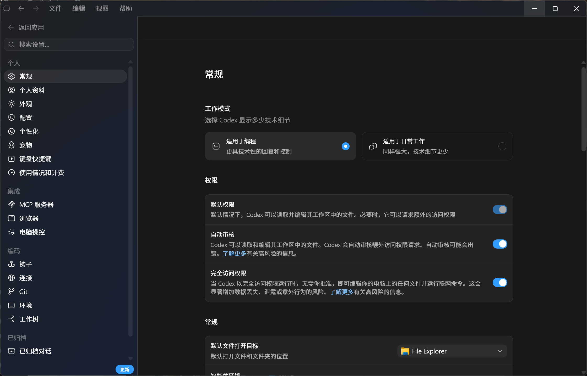

怎么和 Codex 说话才好用
和 Codex 对话的重点不是“问得像不像提示词”，而是“交代得像不像任务”。目标、范围、文件位置、允许做什么、做完怎么验收，说清楚就好用。
第一句先这样说
新任务不要急着让它改。先让它看、让它复述、让它列计划。比如可以说：
“先不要修改文件。请阅读当前项目，告诉我它的大致结构、你认为和这个任务相关的文件、下一步计划，以及哪些地方需要我确认。”
这句话的好处是让 Codex 先进入“理解项目”的状态，而不是马上动手。等它讲得靠谱，再让它执行。
给足上下文
Codex 的输出质量直接取决于你给它的约束。至少交代三样东西：
- 项目约束：写进
AGENTS.md（见第 06 章），每次会话自动带上。 - 相关位置：告诉它在哪个文件夹、哪几个文件、哪张图、哪份报告附近找。
- 硬约束：哪些不能改、哪些必须保留、结果要给谁看、做到什么算完成。
常用斜杠命令
斜杠命令是 Codex 会话里的快捷按钮。记住下面这些就够日常使用：
| 命令 | 什么时候用 | 怎么理解 |
|---|---|---|
/init | 第一次打开一个项目 | 让 Codex 读项目并生成或更新 AGENTS.md |
/status | 不确定现在连的是谁、权限是什么 | 检查模型、Provider、工作目录和认证状态 |
/model | 任务太慢、太贵或不够聪明 | 切换模型和推理强度 |
/approvals | 担心它乱改或乱跑命令 | 切换审批模式和权限边界 |
/review | 它已经改完东西 | 让它反过来检查问题、风险和遗漏 |
/compact | 聊久了、开始答非所问 | 压缩上下文，保留重点后继续 |
/new | 换一个完全不同的任务 | 开新会话，避免旧上下文干扰 |
/resume | 接着之前的任务做 | 恢复旧会话状态 |
什么时候用 Plan
Plan 适合“先想清楚再动手”的任务。比如第一次接触一个项目、要改多个文件、要安装工具、要跑复杂流程、或者你自己也不确定会影响哪里。
可以直接说：“请先进入计划模式。先阅读相关文件，列出你准备做的步骤、会改哪些地方、有什么风险，等我确认后再执行。”
Plan 的重点是刹车。它让 Codex 暂时不要改东西，而是先把路线讲清楚。第一次做项目改动，默认先 Plan。
什么时候用 Goal
Goal 适合“目标明确、过程较长、希望它持续推进”的任务。比如整理一份长文档、分批检查一组文件、把一个安装流程从头跑到尾。
但现在 Goal 偶尔会遇到上下文不够、自动续跑时报错的问题。所以不要把 Goal 写得太大。更稳的写法是把目标拆小：先让它完成一页、一章、一个文件夹，完成后再开下一个 Goal。
能不用 Goal 就先不用。普通任务用自然语言 + Plan 足够。只有你明确希望它“持续做完一个小目标”时再用 Goal；一旦出现上下文不够，就让它先总结当前进度，再开新会话继续。
审批模式：按风险选
用 /approvals 切换权限模式，匹配任务风险[3]：

/approvals 临时切换。| 模式 | 适合 | 说明 |
|---|---|---|
| 只读 / suggest | 分析、审查、解释 | 只读不改，起步阶段用这个最稳 |
| auto-edit | 补测试、格式化、小重构 | 自动改文件，但执行命令仍需确认 |
| full-access / auto | 批量 lint、CI 修复 | 全自动，仅在你信任任务边界时用 |
模型与推理强度
用 /model 在速度与质量间切换。简单整理、改错别字、查路径，用快一点的模型；推导、审查、跨文件计划、写关键文档，用更强的模型和更高推理强度。
几个很实用的说法
先解释给我听
“先不要改。请用新同学能听懂的方式解释这个文件夹里每个部分是干什么的。”
先找原因
“请先定位原因，不要急着修。列出三种可能原因，说明你会先验证哪一个。”
小步修改
“只改最小必要范围。改完告诉我改了哪些文件、为什么改、我应该怎么检查。”
用 /review 当第一道关
改完别急着相信。先让它 review 自己的改动，再人工看一遍。
几个反例，别这么问
- “帮我优化一下”——没说目标、范围和验收标准。
- “把这个项目重构好”——太大，应该先让它列计划并拆成小步。
- 一次性贴大段内容让它“看看”——应该让它读文件，或者先说明你关心什么。
- 全程 full-access 不看 diff——出了问题不知道哪步引入的。
把 Codex 当成一个聪明但需要明确指令的新同学：讲清目标、给约束、分小步、看计划、勤 review。它最值钱的不是“会聊天”，而是“能按真实项目往前推进”。
下一章把这些技巧沉淀进项目结构和工作流里，变成团队可复用的资产。